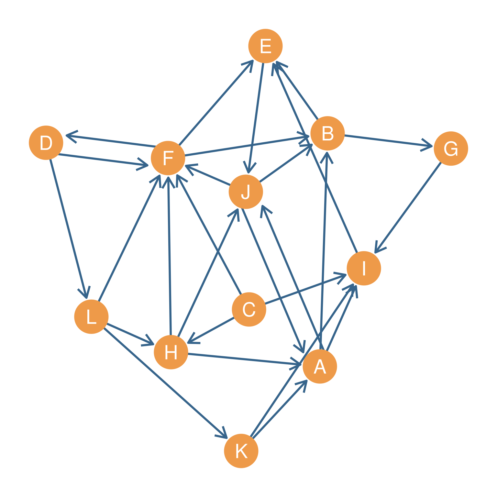

| A | B | C | D | E | F | G | H | I | J | K | L | |
|---|---|---|---|---|---|---|---|---|---|---|---|---|
| A | 0 | 1 | 0 | 0 | 0 | 0 | 0 | 0 | 1 | 1 | 0 | 0 |
| B | 0 | 0 | 0 | 0 | 1 | 0 | 1 | 0 | 0 | 0 | 0 | 0 |
| C | 0 | 0 | 0 | 0 | 0 | 1 | 0 | 1 | 1 | 0 | 0 | 0 |
| D | 0 | 0 | 0 | 0 | 0 | 1 | 0 | 0 | 0 | 0 | 0 | 1 |
| E | 0 | 0 | 0 | 0 | 0 | 0 | 0 | 0 | 0 | 1 | 0 | 0 |
| F | 0 | 1 | 0 | 1 | 1 | 0 | 0 | 0 | 0 | 0 | 0 | 0 |
| G | 0 | 0 | 0 | 0 | 0 | 0 | 0 | 0 | 1 | 0 | 0 | 0 |
| H | 1 | 0 | 0 | 0 | 0 | 1 | 0 | 0 | 0 | 1 | 0 | 0 |
| I | 0 | 0 | 0 | 0 | 1 | 0 | 0 | 0 | 0 | 0 | 0 | 0 |
| J | 1 | 1 | 0 | 0 | 0 | 1 | 0 | 0 | 0 | 0 | 0 | 0 |
| K | 1 | 0 | 0 | 0 | 0 | 0 | 0 | 0 | 1 | 0 | 0 | 0 |
| L | 0 | 0 | 0 | 0 | 0 | 1 | 0 | 1 | 0 | 0 | 1 | 0 |
33 Status
Sometimes you hear the phrase “you are who you know.” This is the basis of thinking of “status” (sometimes also called “prestige”) from a social networks perspective. The basic idea is that you get status from the connections that you have with other people, or more precisely people “give” you status when they direct connections toward you. The “better connected” you are, that is, the more people direct deferential ties toward you, the more status you have.
However, note that this immediately introduces a complication. If you get status from the connections that you have, that means that the people you are connected to also get status from the connections they have (which may include you!) but that also means that the people whom they are connected to also get status from the connections they have and so on, forever and ever.
People have tried to grapple with this recursive nature of status in social network to develop various status metrics (Vigna 2016). In this lesson we will begin with the simplest case and move on to headier and more complicated cases.
33.1 Status as Indegree Centrality
Consider a network which could be composed of asymmetric ties indicating some kind of positive regard or esteem that node i has for node j, represented by the directed graph in Figure 34.1, with result adjacency matrix shown in Table 34.1.
The directed edges could be “thinks the other person is great,’’ or”respects the other person” or “would take advice from that person.” Note that all these relations are asymmetric you can think that person A is great, but that does not mean they think the same thing about you.

An easy approach is to measure the status of each node is by counting the number of direct nominations they get from others. This would be trying to measure the status of each node by using their indegree centrality. Recall, from our discussion of centrality, that this is given by computing the column sums of the adjacency matrix (summing down each column across rows). In matrix form:
\[ C^{IN}_i = \sum_j a_{ij} \tag{33.1}\]
The results of the indegree calculation for all the nodes in the graph shown in Figure 34.1 — with corresponding adjacency matrix shown in Table 34.1 — are shown in Table 33.2 (a). According to the table, nodes \(F\) and \(I\) are the highest status nodes in Figure 34.1 because they each receive five and four nominations respectively They are followed by nodes \(\{A, B, E, J\}\) who receive three nominations each. Node \(C\) is the lowest status, as no one thinks they are important.
However, the problem with using the number of incoming nominations as a measure of status is that the indegree centrality only measures the number of ties that are incoming to each node, but it does not differentiate between who sends each tie. Every nomination counts as the same. But as we noted, the whole point of the idea of status is that you gain status when you receive ties from high-status others, and their status is established by their receiving ties from high status others, and so forth.
This brings up another problem with the indegree centrality, which is that it is a purely local measure, counting only paths of length one (direct connections). But it is possible that you get status not only from the people you are connected to, but the people they are connected to (paths of length two) and the people those people are connected to (paths of length three) and so forth. A good measure of status would incorporate information from indirect ties (see Chapter 13).
So indegree centrality won’t do as a measure of status in social networks, if we aim to capture the full idea behind the concept.
33.2 Using Exogeneous Status Information
Let us deal with the problem of treating every incoming tie the same first. One possibility is that we check some measure of status that comes from outside the network (the fancy word for this is exogenous). This could be for instance, the position of each node in the organizational chart, with ten indicating a top position and zero indicating an entry-level position. We could record this information using a \(1 \times 12\) row vector where the exogenous status of each node i is given by each entry \(\mathbf{b}_i\). Such an exogenous status score vector is shown in Table 33.2. In the table, larger numbers indicate higher exogenous status.
| A | B | C | D | E | F | G | H | I | J | K | L |
|---|---|---|---|---|---|---|---|---|---|---|---|
| 3 | 3 | 0 | 1 | 3 | 5 | 1 | 2 | 4 | 3 | 1 | 1 |
| A | B | C | D | E | F | G | H | I | J | K | L |
|---|---|---|---|---|---|---|---|---|---|---|---|
| 2 | 5 | 4 | 6 | 8 | 8 | 2 | 4 | 9 | 4 | 9 | 6 |
| A | B | C | D | E | F | G | H | I | J | K | L |
|---|---|---|---|---|---|---|---|---|---|---|---|
| 17 | 14 | 0 | 8 | 22 | 24 | 5 | 10 | 17 | 14 | 6 | 6 |
| A | B | C | D | E | F | G | H | I | J | K | L |
|---|---|---|---|---|---|---|---|---|---|---|---|
| 6 | 11 | 0 | 5 | 12 | 7 | 3 | 1 | 5 | 8 | 1 | 1 |
| A | B | C | D | E | F | G | H | I | J | K | L |
|---|---|---|---|---|---|---|---|---|---|---|---|
| 13.5 | 27.3 | 0 | 8.7 | 29.3 | 19.1 | 13 | 2.9 | 15.3 | 21 | 2.6 | 4.3 |
| A | B | C | D | E | F | G | H | I | J | K | L |
|---|---|---|---|---|---|---|---|---|---|---|---|
| 80.9 | 154.7 | 4 | 60.6 | 174 | 120.4 | 72.1 | 21 | 91.1 | 129 | 24.2 | 33.4 |
Now the status score for each person \(\mathbf{s}\) can be determined by taking each of their incoming — recorded in the columns of the adjacency matrix in Table 34.1 — nominations and weighting them by the exogenous status score of each of the other people, so that nominations from higher status nodes (like node \(K\) in Table 33.2 (b)) count for more than those coming from lower status nodes (like node \(A\) in Table 33.2 (b)). To calculate the status of each node we add up the status of each of the nodes that point to it.
How do we do this? Recall from Chapter 23, that it is always possible to multiply a row vector times a square matrix as long as the row vector is of the same length as the matrix’s row and column dimensions. The result is always another row vector of the same length as the original.
Accordingly, we can get each person’s weighted status score by taking the exogenous status scores vector \(\mathbf{b}\) and multiplying by the network’s adjacency matrix \(\mathbf{A}\). In this case, \(\mathbf{b}\) is \(1 \times 12\) and \(\mathbf{A}\) \(\mathbf{b}\) is \(12 \times 12\). Because the number of rows of the matrix are the same as the lengtth (number of columns) of the vector, the multiplication is allowed (the terms are conformable) and the result will be a \(1 \times 12\) row vector of status scores that we will call \(\mathbf{s}^{ex}\):
\[ \mathbf{s}^{ex} = \mathbf{b}\mathbf{A} \tag{33.2}\]
When we do that, we end up with the status scores shown in Table 33.2 (c).
As we can see, the status order is a bit different once we take into account the exogenous status of the other people who nominate each node. Yes, node \(F\) is still the highest ranked node, and node \(C\) is the lowest ranked. However, node \(I\) is no longer the second highest status node, that honor now goes to node \(E\). The reason is that while \(I\) has a larger indegree than \(E\), node \(I\)’s in-neighbors, as shown in Figure Figure 34.1 and Table 34.1, \(N_{in}(I) = \{A, C, G, K\}\) are relatively low status (except for \(K\)). \(E\)’s in-neighbors, by way of contrast, \(N_{in}(E) = \{B, F, I\}\) are all high to mid-status.
Note that for each node, we can reconstruct their status score simply by adding up the status scores of their in-neighbors in Table 34.1. So for instance, node \(A\) gets at status score of 17. Where does this number come from? Well if we go to Table 34.1, we can see that \(A\)’s in-neighbors are \(\{H, J, K\}\) (looking down the column corresponding to \(A\)), and we can see that the corresponding status scores of each of these nodes in Table 33.2 (b) are 4, 4, and 9 (respectively), which means that \(4 + 4 + 9 = 17\), the status score for node \(A\)!
33.3 Using Endogeneous Network Information
It turns out, that in many cases, we don’t have exogenous status information on each node in the network to rely on. In that case, we must rely on endogenous network information to determine the status of each of the other nodes.
One approach is just to use original indegree centrality scores shown in Table 33.2 (a) as the status of each other the nodes. We can then say that a node is high status if it is pointed to by other nodes who are also pointed to by many other nodes. Conversely, a node is low status if it is pointed to by other nodes that are not pointed to by many other nodes.
\[ s^{en} = C^{IN}\mathbf{A} \tag{33.3}\]
Where \(C^{IN}\) is the \(1 \times 12\) row vector of indegree centralities shown in Table 33.2 (a) and \(\mathbf{A}\) is the the network’s adjacency matrix shown in Table 34.1. The results are shown in Table 33.2 (d). As we can see, considering only endogenous network information gives us a completely different picture of the status order than using exogenous information. Now \(E\) is definitely the highest status node, and \(F\) which was the highest status node based on exogenous considerations drops to fourth place, behind \(B\) and \(J\).
Looking at Figure 34.1, we can see why this happened. Take the set of \(F\)’s in-neighbors \(\{C, D, H, J, L\}\). It is easy to see from Table 33.2 (a), that most of these nodes also have low indegree centrality (except for \(J\)). So even though \(F\) has five nodes pointing toward them (\(C^{IN}_F = 5\)), all of them are not very high-status people. By comparison \(E\) only has three in-neighbors \(\{B, F, I\}\), and all three are towards the top in terms of in-degree centrality. \(E\) has higher status than \(F\) according to \(s^{en}\) because the people that choose \(E\) are also chosen by many others, which is exactly what we want in a status measure.
While \(s^{en}\) seems like a good measure of status, it does have one big drawback. It still only counts direct connections. As we noted earlier, it is possible that you get status not just from the nodes that point directly toward you, but from the nodes that point to those other people even if they don’t point toward you (e.g., two step connections), and perhaps from the nodes that point to those two-step alters, and the ones that point to those three-steps away, and so forth. A good status measure should be able to take into account the status of your indirect connections in computing your own status score. How do we do this?
33.4 A Mathy Interlude
Before we get to that, we will explore some recreational math. dConsider any number \(x\), where \(x < |1|\) (remember that \(|a|\) means “the absolute value of \(a\)), and thus \(-1 > x < 1\) (this reads”\(x\) is between -1 and +1”). Thus, \(x\) can be 0.43, or -0.62, or whatever in that interval. Recall that when we take a number in this interval and we raise it to a power, we end up with a smaller number than we begin with. The bigger the power, the smaller the result. For instance, take \(x = 0.75\). For instance:
\[ x^2 = 0.75^2 = 0.562 \] \[ x^5 = 0.75^5 = 0.237 \] \[ x^{10} = 0.75^{10} = 0.056 \] Because mathematicians are strange people, they like to say things like, “since the result gets closer to zero the bigger the power, then that means that when I raise the number to an infinite power, then the result should approach zero.” In equation terms:
\[ x^{\infty} = 0.75^{\infty} \approx 0 \] Since raising a number between -1 and 1 to a big power gets you closer to zero the bigger the power, mathematicians then go on to wonder whether adding up the powers, gets to the point where the sum does not grow anymore. For instance, what is the end point of:
\[ 1 + x + x^2 + x^3 + x^4 + x^5 \ldots + x^{\infty} \tag{33.4}\]
The idea is that as we move to the right and add a number between -1 and 1 raised to a bigger and bigger power, we add a smaller and smaller number, such that as we approach infinity, we end up adding such an infinitesimally small number that it might as well be zero. For instance, table Table 33.3 shows the result of raising \(x\) to the powers between 2 and 20 for \(x = 0.75\).
| Power | Result |
|---|---|
| 2 | 0.562 |
| 3 | 0.422 |
| 4 | 0.316 |
| 5 | 0.237 |
| 6 | 0.178 |
| 7 | 0.133 |
| 8 | 0.100 |
| 9 | 0.075 |
| 10 | 0.056 |
| 11 | 0.042 |
| 12 | 0.032 |
| 13 | 0.024 |
| 14 | 0.018 |
| 15 | 0.013 |
| 16 | 0.010 |
| 17 | 0.008 |
| 18 | 0.006 |
| 19 | 0.004 |
| 20 | 0.003 |
Now let us sum \(1 + 0.75\) and add the result to the sum of all the numbers in the third column of Table 33.3, to get an approximation to the sum shown in Equation 33.4. The result is 3.99.
In turns out, by some bit of mathematical magic, that this number is pretty close to: \[ (1-0.75)^{-1} = \frac{1}{1 - 0.75} = 4 \]
As we noted, as the power that we raise the number to approaches \(\infty\), we will be adding a number that is closer to zero, so the result of the infinity sum when \(x = 0.75\) will converge towards:
\[ 1 + x + x^2 + x^3 + x^4 + x^5 \ldots + x^{\infty} = \] \[ 1 + 0.75 + 0.75^2 + 0.75^3 + 0.75^4 + 0.75^5 \ldots + 0.75^{\infty} \approx 4 \] In general terms, for any number \(x\) the sum of the following infinite series converges to:
\[ 1 + x + x^2 + x^3 + x^4 + x^5 +...x^\infty = \] \[ \frac{1}{1 - x} = (1-x)^{-1} \tag{33.5}\]
Why is this bit of math important? We will see next!
33.5 Katz Status Index
In the mid-twentieth century, the great statistician Leo Katz set out to develop a measure of status in social networks that took into account indirect connections. He first observed that the new matrix that results from taking the original adjacency matrix and raising it to a power (using matrix multiplication) has a clear interpretation. For instance, as we saw in Section 24.3, if we raise the adjacency matrix \(A\) shown in Table 34.1 to the third power (\(\mathbf{A}^3\)) the resulting matrix will contain, as cell entries \(a^3_{ij}\), all the directed paths of length \(l = 3\) that have row node \(i\) as the starting column node and node \(j\) as the destination node, the same goes for any number \(\mathbf{A}^k\). This means that the column sums of this matrix—or the row sums of the transpose \(A^T\)—will contain the number of paths of length three that are directed from all other nodes to a given node.
Katz saw this as a way to incorporate indirect connections to construct a measure of status using only endogenous information. The idea would be to say that your total status is the sum of number of other people who choose you (or think you are great, or a great source or advice or whatever). However, among the people that choose you the ones that are chosen by many others should count for more. Those are people who are two-steps away from you. But the same should apply to the people who choose those others (people three-steps away from you). Overall, you should get more status from people who choose the people who choose the people, who choose the people…who choose you and you should get more status from the more people who are most likely to be chosen by those others, across any number of steps.
To accomplish this, we need to construct a new matrix that incorporates all this information about people’s one step, two-step, three-step, connections to others, then sum columns of that matrix (or the rows of the transpose). The resulting vector (\(s^{Katz}_i\)) would contain the desired score for each node \(i\).
One way to proceed would be to create the matrix by calculating the following infinite sum:
\[ I + A + A^2 + A^3 + A^4 + \ldots A^{\infty} = \]
\[ \mathbf{1} \sum_{k = 0}^{k = \infty} A^k \tag{33.6}\]
With the understanding that \(A^0 = I\) (raising a matrix to the zero power returns the identity matrix), and \(\mathbf{1}\) is a row vector full of ones \(\mathbf{1} = \{1, 1, 1, ... 1\}\) of the same length as the number of rows in \(A\), which when multiplied by \(\sum A^k\) would return the column sums of that matrix (see Section 24.6.3) which would be our vector of Katz centrality scores for each node.
There are a couple of problems with Equation 33.6. First this sum keeps getting bigger and bigger and it does not have a natural end point (keeps going forever). This is because it is counting the direct connections (\(A\)) as much as the very indirect connections, like \(A^5\), or the number of indirect links connecting you to others five steps away.
What we want is a way to count the first-step links the most, and then discount the longer-step links, with the discount getting larger the longer the chain. So that three-steps links count for less than two-steps links but count for more than four step links to others and so forth.
Katz’s great idea is to multiply the original adjacency matrix and its powers by a number \(\alpha\) that was larger than zero, but less than one. This leads to:
\[ I + \alpha A + \alpha^2 A^2 + \alpha^3 A^3 + \alpha^4 A^4 + \ldots \alpha^\infty A^{\infty} = \]
\[ \mathbf{1} \sum_{k = 0}^{k = \infty} \alpha^k A^k \tag{33.7}\]
With the understanding that \(\alpha^0 A^0 = 1 \times I = I\), the first term in the sequence is once again the identity matrix. Now the difference between Equation 33.6 and Equation 33.7, is that as we saw before (see Equation 33.5), while the sum in Equation 33.6 keeps getting bigger and bigger (the technical term is “diverges”), the one in Equation 33.7, will stop growing, because raising a number less than one and more than zero (like \(\alpha\)) to a bigger and bigger power will result in a tinier and tinier number, until we get close to zero. The sum will converge rather than diverge.
Moreover, Katz knew his math, and noted that there is a version of {Equation 33.5} that applies to matrices, and which can be calculated without adding up an infinity of numbers. This is:
\[ \mathbf{1} \sum_{k = 0}^{k = \infty} \alpha^k A^k = \mathbf{1} (I - \alpha A)^{-1} \tag{33.8}\]
Where \(I\) refers to the identity matrix (see Section 24.7). What Katz (1953) proposed is that we can turn the infinite sum part of Equation 33.8 (\(I + \alpha A + \alpha A^2 + \alpha A^3 + \alpha A^4 + \ldots \alpha A^{\infty})\) into just \((I- \alpha A)^{-1}\) following the principle outlined earlier in Equation 33.5. Just like the endless sum of squares of a number \(x\) between \(-1\) and and \(1\) just turns into just \((1-x)^{-1}\), the endless sums of a matrix containing numbers between \(-1\) and \(1\) as its entries \(\alpha A\) turns into \((I-\alpha A)^{-1}\), with \(I\) playing the role of \(1\) and raising \(I-\alpha A\) to the power of \(-1\) playing the role of taking the reciprocal.1
Katz showed that the new matrix, \(A^* = (I-\alpha A)^{-1}\) contains all the information we need, as it condenses the sums of all the status that a persons gets from all their connections both direct and indirect, regardless of how indirect, and it weighs each person’s contribution to each other person’s status by the status of those people (which is calculated in the same way). The column sums of this matrix \(\mathbf{1}(I-\alpha A)^{-1}\)will give us the Katz status scores we need as the contain information on all the indirect paths that start with other nodes and end in the focal node. Math magic to the rescue!
Let’s see how it works, step by step:
First we create the \(12 \times 12\) identity matrix \(I_{12 \times 12}\), show in Table 33.4 (a). As noted, this matrix has twelve ones across the diagonals and zeroes everywhere else. Then we choose a value for alpha. There are obscure mathematical reasons for why this value cannot be too big (depending on \(A\)), but for this example \(\alpha = 0.45\) will work.
Second, we multiply \(\alpha\) times the original adjacency matrix (shown in Figure 34.1) to get \(\alpha A\). This new matrix is shown in Table 33.4 (b). In the new \(\alpha A\) matrix, for every cell in which there is one in \(A\), the value 0.45 now appears in \(\alpha A\).
Third, we subtract \(I\) from \(\alpha A\) , to get \(I-\alpha A\). This new matrix is shown in Table 33.4 (c). Note that what this does is to add ones to the diagonals of \(\alpha A\) and change all the other non-zero entries from positive to negative.
Fourth, we find the matrix that equals the reciprocal of \(I-\alpha A\) (also called the matrix inverse of \(I-\alpha A\)) to get \((I-\alpha A)^{-1}\). The matrix inverse is somewhat involved to calculate for larger matrices like \(I-\alpha A\), so, for now, chalk the numbers in Table 33.4 (d) up to math magic. Essentially you are trying to find a new matrix \(W\) such that when you multiply it by \((I-\alpha A)\) you get \(I\) as the result; that is a matrix \(W\) is the inverse of another matrix \((I-\alpha A)\) if and only if \(W(I-\alpha A) = I\). This is just like the the reciprocal of any number \(x\), namely, \(\frac{1}{x}\) always equals to one when multiplied by that number: \(\frac{1}{x} \times x = \frac{x}{x} = 1\). This new matrix, called the Katz proximity matrix is shown in Table 33.4 (d).2 In this matrix, the larger the number in the cell, the more node \(i\) is connected to node \(j\) via indirect connections.
Finally, we compute the column sums of the Katz proximity matrix to get the Katz status scores for each node. In equation form:
\[ s^{katz}_i = \mathbf{1} (I - \alpha A)^{-1} \tag{33.9}\]
The resulting scores are shown in Table 33.2 (e) for each node of Figure 34.1.
As we can see, according to the Katz’s status score, node \(E\) is still the highest status node in the network. They are followed by nodes \(B\) and \(J\), closely agreeing with the endogenous status scores obtained using the in-degree (Table 33.2 (d)). This makes sense, since the Katz scores can be seen as a generalization of the endogenous degree measure, with the latter taken into account only the first step links, and Katz’s taking into account all the indirect links regardless of lengths (but counting the really long ones very little, and counting the first step ones the most). In this way, the Katz approach is the most comprehensive way to compute the status of nodes using only endogenous network information.
| A | B | C | D | E | F | G | H | I | J | K | L | |
|---|---|---|---|---|---|---|---|---|---|---|---|---|
| A | 1 | 0 | 0 | 0 | 0 | 0 | 0 | 0 | 0 | 0 | 0 | 0 |
| B | 0 | 1 | 0 | 0 | 0 | 0 | 0 | 0 | 0 | 0 | 0 | 0 |
| C | 0 | 0 | 1 | 0 | 0 | 0 | 0 | 0 | 0 | 0 | 0 | 0 |
| D | 0 | 0 | 0 | 1 | 0 | 0 | 0 | 0 | 0 | 0 | 0 | 0 |
| E | 0 | 0 | 0 | 0 | 1 | 0 | 0 | 0 | 0 | 0 | 0 | 0 |
| F | 0 | 0 | 0 | 0 | 0 | 1 | 0 | 0 | 0 | 0 | 0 | 0 |
| G | 0 | 0 | 0 | 0 | 0 | 0 | 1 | 0 | 0 | 0 | 0 | 0 |
| H | 0 | 0 | 0 | 0 | 0 | 0 | 0 | 1 | 0 | 0 | 0 | 0 |
| I | 0 | 0 | 0 | 0 | 0 | 0 | 0 | 0 | 1 | 0 | 0 | 0 |
| J | 0 | 0 | 0 | 0 | 0 | 0 | 0 | 0 | 0 | 1 | 0 | 0 |
| K | 0 | 0 | 0 | 0 | 0 | 0 | 0 | 0 | 0 | 0 | 1 | 0 |
| L | 0 | 0 | 0 | 0 | 0 | 0 | 0 | 0 | 0 | 0 | 0 | 1 |
| A | B | C | D | E | F | G | H | I | J | K | L | |
|---|---|---|---|---|---|---|---|---|---|---|---|---|
| A | 0.00 | 0.45 | 0 | 0.00 | 0.00 | 0.00 | 0.00 | 0.00 | 0.45 | 0.45 | 0.00 | 0.00 |
| B | 0.00 | 0.00 | 0 | 0.00 | 0.45 | 0.00 | 0.45 | 0.00 | 0.00 | 0.00 | 0.00 | 0.00 |
| C | 0.00 | 0.00 | 0 | 0.00 | 0.00 | 0.45 | 0.00 | 0.45 | 0.45 | 0.00 | 0.00 | 0.00 |
| D | 0.00 | 0.00 | 0 | 0.00 | 0.00 | 0.45 | 0.00 | 0.00 | 0.00 | 0.00 | 0.00 | 0.45 |
| E | 0.00 | 0.00 | 0 | 0.00 | 0.00 | 0.00 | 0.00 | 0.00 | 0.00 | 0.45 | 0.00 | 0.00 |
| F | 0.00 | 0.45 | 0 | 0.45 | 0.45 | 0.00 | 0.00 | 0.00 | 0.00 | 0.00 | 0.00 | 0.00 |
| G | 0.00 | 0.00 | 0 | 0.00 | 0.00 | 0.00 | 0.00 | 0.00 | 0.45 | 0.00 | 0.00 | 0.00 |
| H | 0.45 | 0.00 | 0 | 0.00 | 0.00 | 0.45 | 0.00 | 0.00 | 0.00 | 0.45 | 0.00 | 0.00 |
| I | 0.00 | 0.00 | 0 | 0.00 | 0.45 | 0.00 | 0.00 | 0.00 | 0.00 | 0.00 | 0.00 | 0.00 |
| J | 0.45 | 0.45 | 0 | 0.00 | 0.00 | 0.45 | 0.00 | 0.00 | 0.00 | 0.00 | 0.00 | 0.00 |
| K | 0.45 | 0.00 | 0 | 0.00 | 0.00 | 0.00 | 0.00 | 0.00 | 0.45 | 0.00 | 0.00 | 0.00 |
| L | 0.00 | 0.00 | 0 | 0.00 | 0.00 | 0.45 | 0.00 | 0.45 | 0.00 | 0.00 | 0.45 | 0.00 |
| A | B | C | D | E | F | G | H | I | J | K | L | |
|---|---|---|---|---|---|---|---|---|---|---|---|---|
| A | 1.00 | -0.45 | 0 | 0.00 | 0.00 | 0.00 | 0.00 | 0.00 | -0.45 | -0.45 | 0.00 | 0.00 |
| B | 0.00 | 1.00 | 0 | 0.00 | -0.45 | 0.00 | -0.45 | 0.00 | 0.00 | 0.00 | 0.00 | 0.00 |
| C | 0.00 | 0.00 | 1 | 0.00 | 0.00 | -0.45 | 0.00 | -0.45 | -0.45 | 0.00 | 0.00 | 0.00 |
| D | 0.00 | 0.00 | 0 | 1.00 | 0.00 | -0.45 | 0.00 | 0.00 | 0.00 | 0.00 | 0.00 | -0.45 |
| E | 0.00 | 0.00 | 0 | 0.00 | 1.00 | 0.00 | 0.00 | 0.00 | 0.00 | -0.45 | 0.00 | 0.00 |
| F | 0.00 | -0.45 | 0 | -0.45 | -0.45 | 1.00 | 0.00 | 0.00 | 0.00 | 0.00 | 0.00 | 0.00 |
| G | 0.00 | 0.00 | 0 | 0.00 | 0.00 | 0.00 | 1.00 | 0.00 | -0.45 | 0.00 | 0.00 | 0.00 |
| H | -0.45 | 0.00 | 0 | 0.00 | 0.00 | -0.45 | 0.00 | 1.00 | 0.00 | -0.45 | 0.00 | 0.00 |
| I | 0.00 | 0.00 | 0 | 0.00 | -0.45 | 0.00 | 0.00 | 0.00 | 1.00 | 0.00 | 0.00 | 0.00 |
| J | -0.45 | -0.45 | 0 | 0.00 | 0.00 | -0.45 | 0.00 | 0.00 | 0.00 | 1.00 | 0.00 | 0.00 |
| K | -0.45 | 0.00 | 0 | 0.00 | 0.00 | 0.00 | 0.00 | 0.00 | -0.45 | 0.00 | 1.00 | 0.00 |
| L | 0.00 | 0.00 | 0 | 0.00 | 0.00 | -0.45 | 0.00 | -0.45 | 0.00 | 0.00 | -0.45 | 1.00 |
| A | B | C | D | E | F | G | H | I | J | K | L | |
|---|---|---|---|---|---|---|---|---|---|---|---|---|
| A | 2.1 | 2.7 | 0 | 0.7 | 2.6 | 1.5 | 1.2 | 0.1 | 1.6 | 2.2 | 0.1 | 0.3 |
| B | 0.4 | 1.8 | 0 | 0.3 | 1.4 | 0.6 | 0.8 | 0.1 | 0.6 | 0.8 | 0.1 | 0.1 |
| C | 1.8 | 3.5 | 1 | 1.3 | 3.9 | 3.0 | 1.6 | 0.7 | 2.1 | 2.9 | 0.3 | 0.6 |
| D | 1.5 | 3.0 | 0 | 2.3 | 3.3 | 2.8 | 1.4 | 0.5 | 1.5 | 2.4 | 0.5 | 1.0 |
| E | 0.8 | 1.5 | 0 | 0.5 | 2.5 | 1.0 | 0.7 | 0.1 | 0.7 | 1.5 | 0.1 | 0.2 |
| F | 1.2 | 2.9 | 0 | 1.4 | 3.3 | 3.0 | 1.3 | 0.3 | 1.3 | 2.2 | 0.3 | 0.6 |
| G | 0.2 | 0.3 | 0 | 0.1 | 0.5 | 0.2 | 1.1 | 0.0 | 0.6 | 0.3 | 0.0 | 0.0 |
| H | 2.3 | 4.0 | 0 | 1.4 | 4.1 | 3.1 | 1.8 | 1.3 | 2.0 | 3.5 | 0.3 | 0.6 |
| I | 0.4 | 0.7 | 0 | 0.2 | 1.1 | 0.5 | 0.3 | 0.0 | 1.3 | 0.7 | 0.0 | 0.1 |
| J | 1.7 | 3.3 | 0 | 1.0 | 3.3 | 2.3 | 1.5 | 0.2 | 1.6 | 3.4 | 0.2 | 0.5 |
| K | 1.1 | 1.5 | 0 | 0.4 | 1.7 | 0.9 | 0.7 | 0.1 | 1.3 | 1.3 | 1.1 | 0.2 |
| L | 2.1 | 3.8 | 0 | 1.4 | 4.1 | 3.2 | 1.7 | 0.7 | 2.1 | 3.2 | 0.7 | 1.7 |
33.6 Hubbell’s Tweak on Katz’s Score
So far, we have discussed two main ways to measure the status of node in a social network, both based on the similar principle that people gain status from being (directly or indirectly) connected to high-status others (and get less status from being directly or indirectly connected to low status others). There are two ways to get a sense of the status of others. On the exogenous approach, we use some kind of prior ranking or knowledge (see Table 33.2 (b)) on the endogenous approach, we use only information on network connectivity (in-degree or the Katz approach).
What if there was a way to combine both approaches and get the best of both worlds? That is, we count all the paths coming into a node from other nodes—of any length— and we weigh each path so that paths that start with high status nodes (according to our exogenous scores) count for more than paths that have low status nodes as their starting point.
This is exactly what was proposed by Hubbell (1965). It revolves around a relatively small tweak on Katz’s approach. The trick is to take the Katz proximity matrix computed according to to Equation 33.9 and pre-multiply it not by a row vector full of ones, like with Equation 33.9, but by the external row vector of status scores \(\mathbf{b}\) itself.
In equation form:
\[ s^{hubbell} = \mathbf{b}(I-\alpha A)^{-1} \tag{33.10}\]
The resulting Hubbell status scores are shown in Table 33.2 (f) for each node in Figure 34.1. As we can see, incorporating both endogenous and exogenous status information changes the picture, provided by the Katz scores creating more separation between high and low status nodes.
Now, node \(E\) is the indisputable highest status node in the network, followed, at a distant second and third place, by nodes \(B\) and \(F\). Combining both endogenous and exogenous sources of information does reveal a deeper status inequalities in social networks.
References
Hubbell, Charles H. 1965. “An Input-Output Approach to Clique Identification.” Sociometry, 377–99.
Katz, Leo. 1953. “A New Status Index Derived from Sociometric Analysis.” Psychometrika 18 (1): 39–43.
Vigna, Sebastiano. 2016. “Spectral Ranking.” Network Science 4 (4): 433–45.
Recall from high school algebra that \(x^{-1} = \frac{1}{x}\) and that for any number \(x\) the reciprocal of \(x\) is \(\frac{1}{x}\).↩︎
Note that we set the diagonals of the matrix to zero, since we don’t care about the contributions the person makes to their own status based on cycles (walks that begin and end in the same node).↩︎